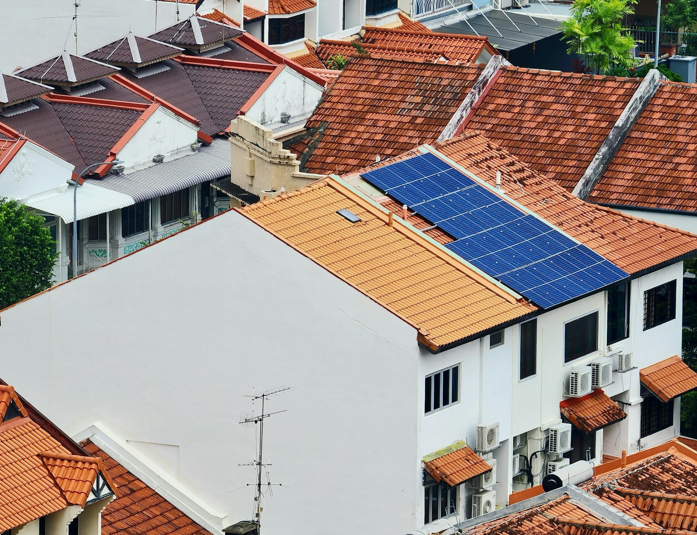
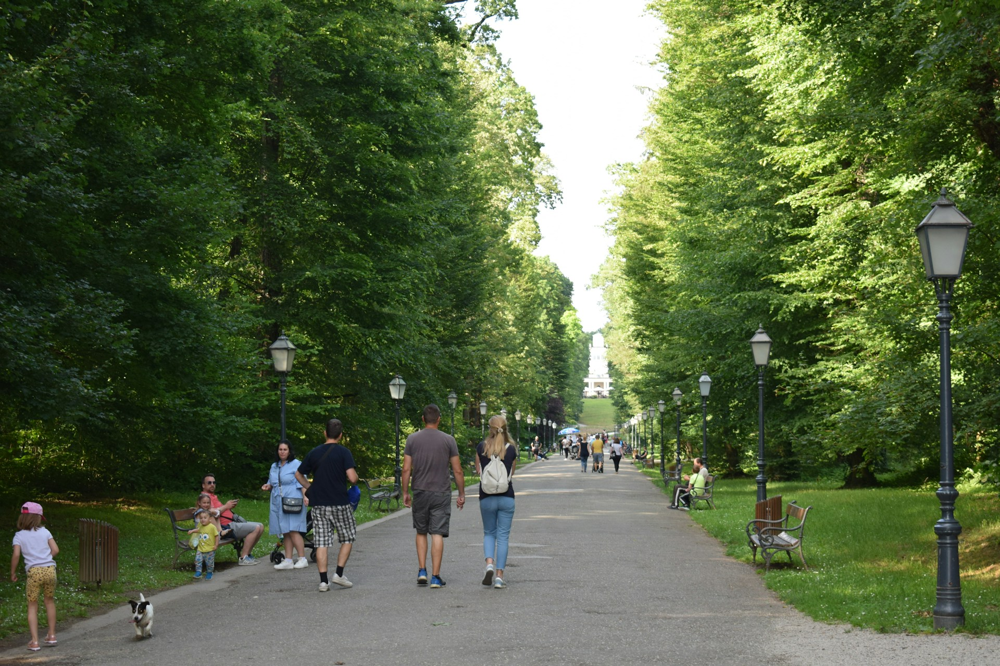
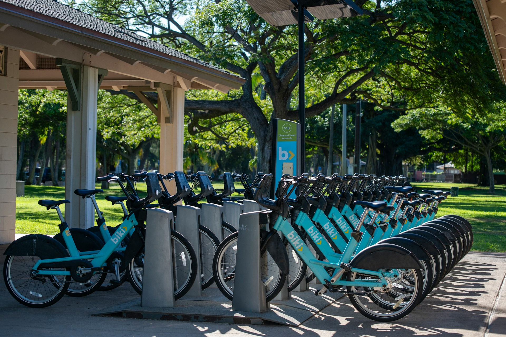
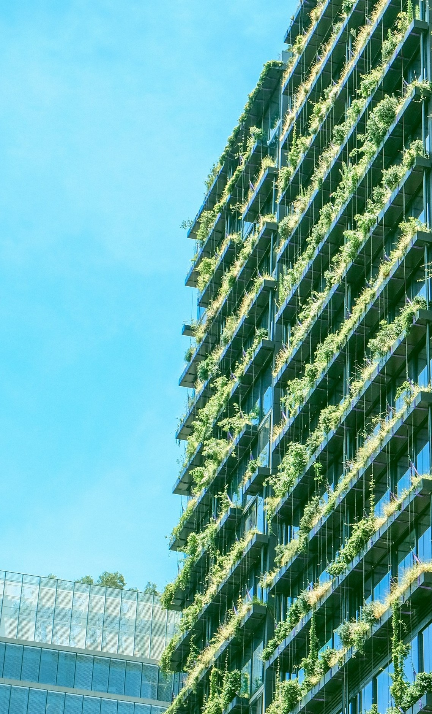
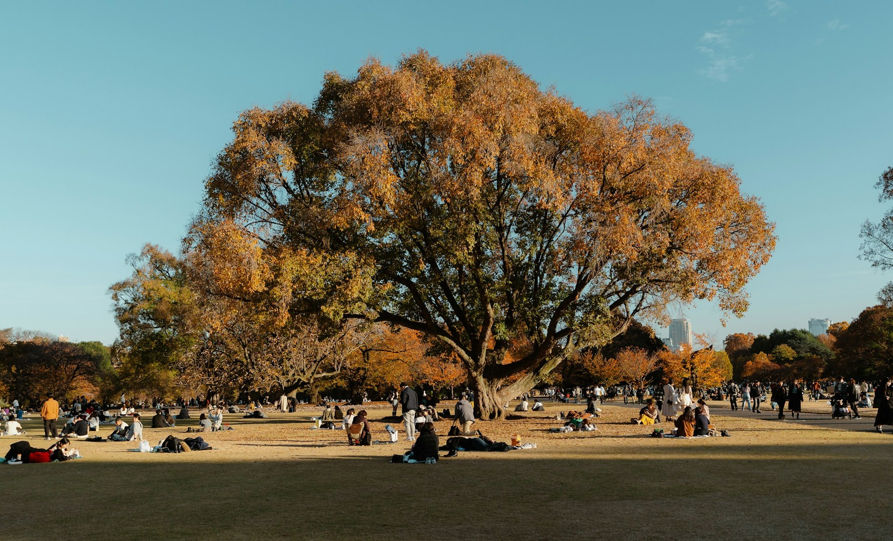
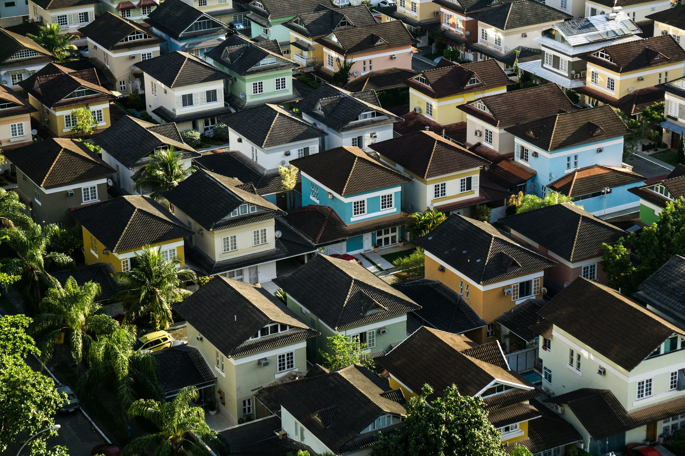
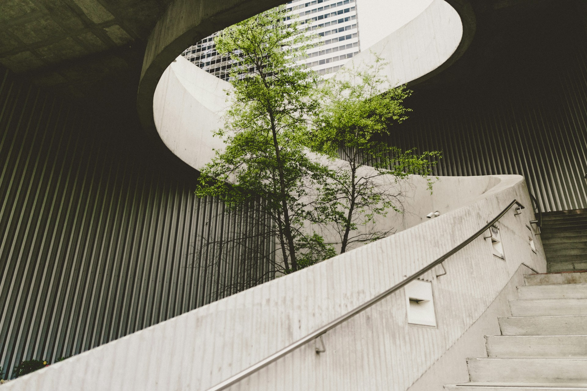
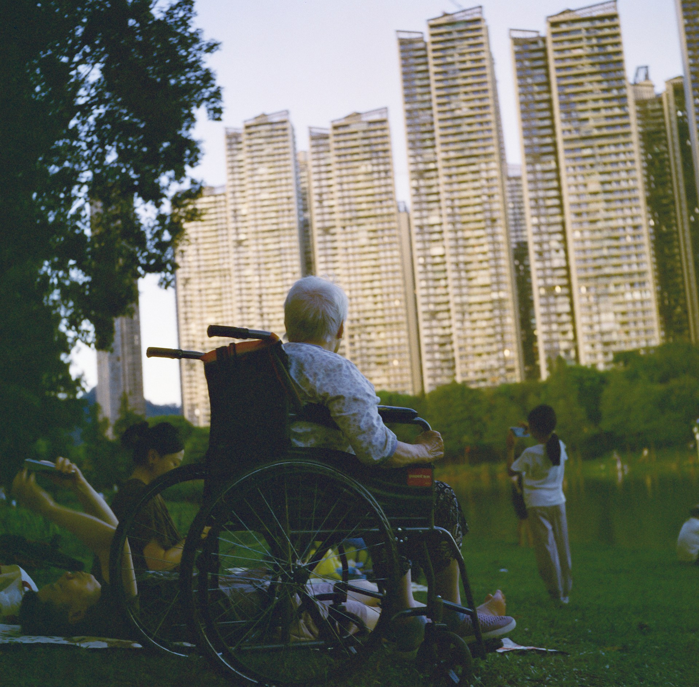
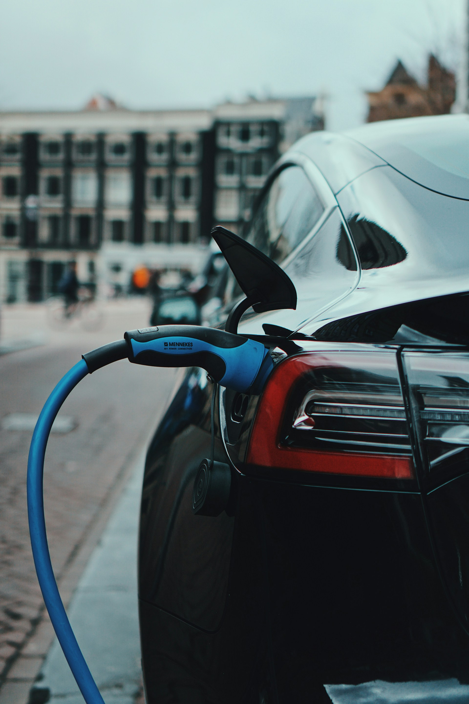

Energía limpia
Las energías renovables reducen emisiones contaminantes y promueven ciudades más sostenibles actualmente.
Leer másLas ciudades concentran oportunidades, innovación y desarrollo, pero también enfrentan desafíos como la contaminación, el crecimiento desordenado y la falta de acceso equitativo a los servicios urbanos. El Objetivo de Desarrollo Sostenible 11 busca construir comunidades más inclusivas, seguras, resilientes y sostenibles para todas las personas.
Completá el formulario y descubrí cómo podés contribuir desde tu comunidad.




Las ciudades sostenibles fortalecen los lazos comunitarios a través de espacios públicos donde las personas pueden reunirse, convivir y construir vida en común.



Las energías renovables reducen emisiones contaminantes y promueven ciudades más sostenibles actualmente.
Leer más
Espacios accesibles fomentan participación ciudadana, integración social y bienestar para todos.
Leer más
Transportes sostenibles disminuyen contaminación urbana, mejoran salud pública y calidad ambiental.
Leer más